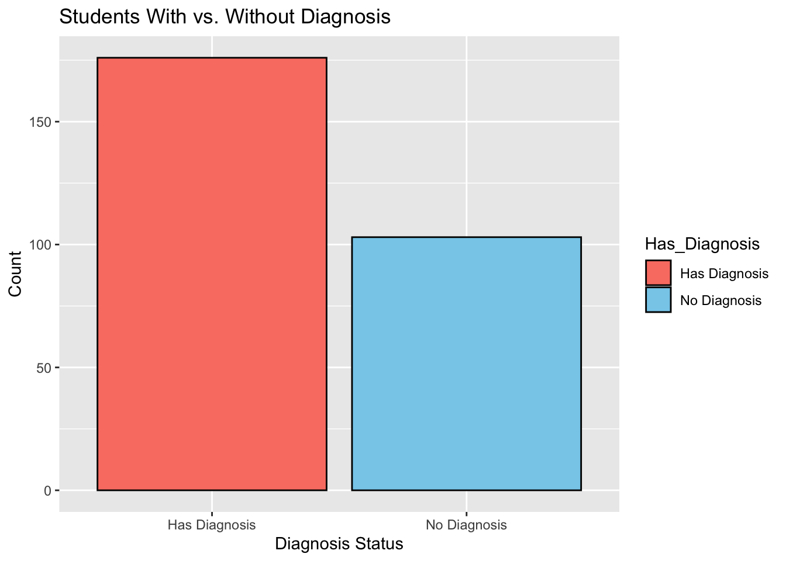
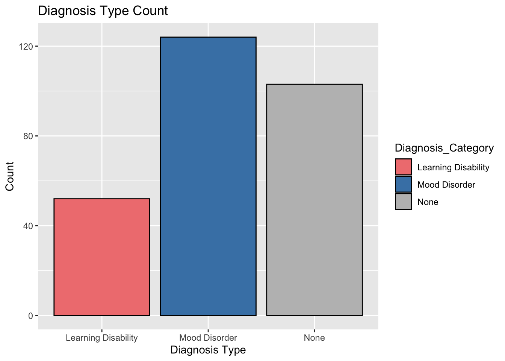

This following post utilized data from a private precision teaching clinic in the United States. Each student in this data has a score for accuracy and fluency of math pinpoints at intake and then their score for those skills on a CBM after 40 hours of instruction.
This report includes: Sample visualizations to understand participant distribution. Data reshaping to convert the dataset into a tidy format. Analysis for three research questions using clustering, regression, and t-tests.
###Research Questions and Methods:###
What math skills, when grouped, predict other skills?
Hierarchical clustering is used to group skills that show similar learning patterns, helping identify which skills are related to others.
What math skills predict outcomes on the CBM after 40 hours of instruction?
A regression model is used to determine which skills contribute most to performance on the CBM test after 40 hours of instruction.
How do targeted versus untargeted math skills relate to CBM outcomes?
A t-test is used to compare performance between targeted and untargeted skills and assess their impact on CBM test results.
Before reading in the data, I cleaned it in a different script so that I could remove the names and replace with unique id numbers (to protect student privacy).
In this project, the first step I took was to load all required R packages. For data manipulation (tidyverse), visualizations (ggplot2), XXXXXXX, and running regression models (lme4).
library(tidyverse)
── Attaching core tidyverse packages ──────────────────────── tidyverse 2.0.0 ──
✔ dplyr 1.1.4 ✔ readr 2.1.5
✔ forcats 1.0.0 ✔ stringr 1.5.1
✔ ggplot2 3.5.1 ✔ tibble 3.2.1
✔ lubridate 1.9.4 ✔ tidyr 1.3.1
✔ purrr 1.0.4
── Conflicts ────────────────────────────────────────── tidyverse_conflicts() ──
✖ dplyr::filter() masks stats::filter()
✖ dplyr::lag() masks stats::lag()
ℹ Use the conflicted package (<http://conflicted.r-lib.org/>) to force all conflicts to become errors
Rows: 14,765
Columns: 453
$ Participant_ID <dbl> NA, NA, 2, 3, 4, 5, 6, 7, …
$ Diagnosis <chr> NA, NA, "None", "None", "N…
$ `Grade Level` <chr> NA, NA, "2nd Grade", "2nd …
$ `Skip Count by 10 Forwards to 1,000...4` <chr> "Skip Count by 10 Forwards…
$ ...5 <chr> "Skip Count by 10 Forwards…
$ ...6 <chr> "Skip Count by 10 Forwards…
$ ...7 <chr> "Skip Count by 10 Forwards…
$ ...8 <chr> "Skip Count by 10 Forwards…
$ `Skip Count by 10 Backwards From 1,000` <chr> "Skip Count by 10 Backward…
$ ...10 <chr> "Skip Count by 10 Backward…
$ ...11 <chr> "Skip Count by 10 Backward…
$ ...12 <chr> "Skip Count by 10 Backward…
$ ...13 <chr> "Skip Count by 10 Backward…
$ `Skip Count by 100 Forwards to 10,000...14` <chr> "Skip Count by 100 Forward…
$ ...15 <chr> "Skip Count by 100 Forward…
$ ...16 <chr> "Skip Count by 100 Forward…
$ ...17 <chr> "Skip Count by 100 Forward…
$ ...18 <chr> "Skip Count by 100 Forward…
$ `Skip Count by 100 Backwards From 10,000` <chr> "Skip Count by 100 Backwar…
$ ...20 <chr> "Skip Count by 100 Backwar…
$ ...21 <chr> "Skip Count by 100 Backwar…
$ ...22 <chr> "Skip Count by 100 Backwar…
$ ...23 <chr> "Skip Count by 100 Backwar…
$ `Skip Count by 2 Forwards to 200...24` <chr> "Skip Count by 2 Forwards …
$ ...25 <chr> "Skip Count by 2 Forwards …
$ ...26 <chr> "Skip Count by 2 Forwards …
$ ...27 <chr> "Skip Count by 2 Forwards …
$ ...28 <chr> "Skip Count by 2 Forwards …
$ `Skip Count by 2 Backwards from 200...29` <chr> "Skip Count by 2 Backwards…
$ ...30 <chr> "Skip Count by 2 Backwards…
$ ...31 <chr> "Skip Count by 2 Backwards…
$ ...32 <chr> "Skip Count by 2 Backwards…
$ ...33 <chr> "Skip Count by 2 Backwards…
$ `Skip Count by 5 Forwards to 500...34` <chr> "Skip Count by 5 Forwards …
$ ...35 <chr> "Skip Count by 5 Forwards …
$ ...36 <chr> "Skip Count by 5 Forwards …
$ ...37 <chr> "Skip Count by 5 Forwards …
$ ...38 <chr> "Skip Count by 5 Forwards …
$ `Skip Count by 5 Backwards from 500...39` <chr> "Skip Count by 5 Backwards…
$ ...40 <chr> "Skip Count by 5 Backwards…
$ ...41 <chr> "Skip Count by 5 Backwards…
$ ...42 <chr> "Skip Count by 5 Backwards…
$ ...43 <chr> "Skip Count by 5 Backwards…
$ `0 - 9` <chr> "0 - 9 Intake Fluency", NA…
$ ...45 <chr> "0 - 9 Intake Accuracy", N…
$ ...46 <chr> "0 - 9 Post Fluency", NA, …
$ ...47 <chr> "0 - 9 Post Accuracy", NA,…
$ ...48 <chr> "0 - 9 Targeted", NA, "1",…
$ `Count by 1's Forwards to 120` <chr> "Count by 1's Forwards to …
$ ...50 <chr> "Count by 1's Forwards to …
$ ...51 <chr> "Count by 1's Forwards to …
$ ...52 <chr> "Count by 1's Forwards to …
$ ...53 <chr> "Count by 1's Forwards to …
$ `Count by 1's Backwards From 120` <chr> "Count by 1's Backwards Fr…
$ ...55 <chr> "Count by 1's Backwards Fr…
$ ...56 <chr> "Count by 1's Backwards Fr…
$ ...57 <chr> "Count by 1's Backwards Fr…
$ ...58 <chr> "Count by 1's Backwards Fr…
$ `Skip Count by 10 Forwards to 1,000...59` <chr> "Skip Count by 10 Forwards…
$ ...60 <chr> "Skip Count by 10 Forwards…
$ ...61 <chr> "Skip Count by 10 Forwards…
$ ...62 <chr> "Skip Count by 10 Forwards…
$ ...63 <chr> "Skip Count by 10 Forwards…
$ `Skip Count by 10 Backwards from 1,000` <chr> "Skip Count by 10 Backward…
$ ...65 <chr> "Skip Count by 10 Backward…
$ ...66 <chr> "Skip Count by 10 Backward…
$ ...67 <chr> "Skip Count by 10 Backward…
$ ...68 <chr> "Skip Count by 10 Backward…
$ `Skip Count by 100 Forwards to 10,000...69` <chr> "Skip Count by 100 Forward…
$ ...70 <chr> "Skip Count by 100 Forward…
$ ...71 <chr> "Skip Count by 100 Forward…
$ ...72 <chr> "Skip Count by 100 Forward…
$ ...73 <chr> "Skip Count by 100 Forward…
$ `Skip Count by 100 Backwards from 10,000` <chr> "Skip Count by 100 Backwar…
$ ...75 <chr> "Skip Count by 100 Backwar…
$ ...76 <chr> "Skip Count by 100 Backwar…
$ ...77 <chr> "Skip Count by 100 Backwar…
$ ...78 <chr> "Skip Count by 100 Backwar…
$ `Skip Count by 2 Forwards to 200...79` <chr> "Skip Count by 2 Forwards …
$ ...80 <chr> "Skip Count by 2 Forwards …
$ ...81 <chr> "Skip Count by 2 Forwards …
$ ...82 <chr> "Skip Count by 2 Forwards …
$ ...83 <chr> "Skip Count by 2 Forwards …
$ `Skip Count by 2 Backwards from 200...84` <chr> "Skip Count by 2 Backwards…
$ ...85 <chr> "Skip Count by 2 Backwards…
$ ...86 <chr> "Skip Count by 2 Backwards…
$ ...87 <chr> "Skip Count by 2 Backwards…
$ ...88 <chr> "Skip Count by 2 Backwards…
$ `Skip Count by 3 Forwards 0-36` <chr> "Skip Count by 3 Forwards …
$ ...90 <chr> "Skip Count by 3 Forwards …
$ ...91 <chr> "Skip Count by 3 Forwards …
$ ...92 <chr> "Skip Count by 3 Forwards …
$ ...93 <chr> "Skip Count by 3 Forwards …
$ `Skip Count by 3 Backwards 36-0` <chr> "Skip Count by 3 Backwards…
$ ...95 <chr> "Skip Count by 3 Backwards…
$ ...96 <chr> "Skip Count by 3 Backwards…
$ ...97 <chr> "Skip Count by 3 Backwards…
$ ...98 <chr> "Skip Count by 3 Backwards…
$ `Skip Count by 4 Forwards 0-48` <chr> "Skip Count by 4 Forwards …
$ ...100 <chr> "Skip Count by 4 Forwards …
$ ...101 <chr> "Skip Count by 4 Forwards …
$ ...102 <chr> "Skip Count by 4 Forwards …
$ ...103 <chr> "Skip Count by 4 Forwards …
$ `Skip Count by 4 Backwards 48-0` <chr> "Skip Count by 4 Backwards…
$ ...105 <chr> "Skip Count by 4 Backwards…
$ ...106 <chr> "Skip Count by 4 Backwards…
$ ...107 <chr> "Skip Count by 4 Backwards…
$ ...108 <chr> "Skip Count by 4 Backwards…
$ `Skip Count by 5 Forwards to 500...109` <chr> "Skip Count by 5 Forwards …
$ ...110 <chr> "Skip Count by 5 Forwards …
$ ...111 <chr> "Skip Count by 5 Forwards …
$ ...112 <chr> "Skip Count by 5 Forwards …
$ ...113 <chr> "Skip Count by 5 Forwards …
$ `Skip Count by 5 Backwards from 500...114` <chr> "Skip Count by 5 Backwards…
$ ...115 <chr> "Skip Count by 5 Backwards…
$ ...116 <chr> "Skip Count by 5 Backwards…
$ ...117 <chr> "Skip Count by 5 Backwards…
$ ...118 <chr> "Skip Count by 5 Backwards…
$ `Skip Count by 6 Forwards 0-72` <chr> "Skip Count by 6 Forwards …
$ ...120 <chr> "Skip Count by 6 Forwards …
$ ...121 <chr> "Skip Count by 6 Forwards …
$ ...122 <chr> "Skip Count by 6 Forwards …
$ ...123 <chr> "Skip Count by 6 Forwards …
$ `Skip Count by 6 Backwards 72-0` <chr> "Skip Count by 6 Backwards…
$ ...125 <chr> "Skip Count by 6 Backwards…
$ ...126 <chr> "Skip Count by 6 Backwards…
$ ...127 <chr> "Skip Count by 6 Backwards…
$ ...128 <chr> "Skip Count by 6 Backwards…
$ `Skip Count by 7 Forwards 0-84` <chr> "Skip Count by 7 Forwards …
$ ...130 <chr> "Skip Count by 7 Forwards …
$ ...131 <chr> "Skip Count by 7 Forwards …
$ ...132 <chr> "Skip Count by 7 Forwards …
$ ...133 <chr> "Skip Count by 7 Forwards …
$ `Skip Count by 7 Backwards 84-0` <chr> "Skip Count by 7 Backwards…
$ ...135 <chr> "Skip Count by 7 Backwards…
$ ...136 <chr> "Skip Count by 7 Backwards…
$ ...137 <chr> "Skip Count by 7 Backwards…
$ ...138 <chr> "Skip Count by 7 Backwards…
$ `Skip Count by 8 Forwards 0-96` <chr> "Skip Count by 8 Forwards …
$ ...140 <chr> "Skip Count by 8 Forwards …
$ ...141 <chr> "Skip Count by 8 Forwards …
$ ...142 <chr> "Skip Count by 8 Forwards …
$ ...143 <chr> "Skip Count by 8 Forwards …
$ `Skip Count by 8 Backwards 96-0` <chr> "Skip Count by 8 Backwards…
$ ...145 <chr> "Skip Count by 8 Backwards…
$ ...146 <chr> "Skip Count by 8 Backwards…
$ ...147 <chr> "Skip Count by 8 Backwards…
$ ...148 <chr> "Skip Count by 8 Backwards…
$ `Skip Count by 9 Forwards 0-108` <chr> "Skip Count by 9 Forwards …
$ ...150 <chr> "Skip Count by 9 Forwards …
$ ...151 <chr> "Skip Count by 9 Forwards …
$ ...152 <chr> "Skip Count by 9 Forwards …
$ ...153 <chr> "Skip Count by 9 Forwards …
$ `Skip Count by 9 Backwards 108-0` <chr> "Skip Count by 9 Backwards…
$ ...155 <chr> "Skip Count by 9 Backwards…
$ ...156 <chr> "Skip Count by 9 Backwards…
$ ...157 <chr> "Skip Count by 9 Backwards…
$ ...158 <chr> "Skip Count by 9 Backwards…
$ `Identify Numbers 1-digit` <chr> "Identify Numbers 1-digit …
$ ...160 <chr> "Identify Numbers 1-digit …
$ ...161 <chr> "Identify Numbers 1-digit …
$ ...162 <chr> "Identify Numbers 1-digit …
$ ...163 <chr> "Identify Numbers 1-digit …
$ `Identify Numbers 4-digits` <chr> "Identify Numbers 4-digits…
$ ...165 <chr> "Identify Numbers 4-digits…
$ ...166 <chr> "Identify Numbers 4-digits…
$ ...167 <chr> "Identify Numbers 4-digits…
$ ...168 <chr> "Identify Numbers 4-digits…
$ `Identify Numbers 7-digits` <chr> "Identify Numbers 7-digits…
$ ...170 <chr> "Identify Numbers 7-digits…
$ ...171 <chr> "Identify Numbers 7-digits…
$ ...172 <chr> "Identify Numbers 7-digits…
$ ...173 <chr> "Identify Numbers 7-digits…
$ `Read Number Words 1 & 2-digits` <chr> "Read Number Words 1 & 2-d…
$ ...175 <chr> "Read Number Words 1 & 2-d…
$ ...176 <chr> "Read Number Words 1 & 2-d…
$ ...177 <chr> "Read Number Words 1 & 2-d…
$ ...178 <chr> "Read Number Words 1 & 2-d…
$ `Read Number Words 1-4-digits` <chr> "Read Number Words 1-4-dig…
$ ...180 <chr> "Read Number Words 1-4-dig…
$ ...181 <chr> "Read Number Words 1-4-dig…
$ ...182 <chr> "Read Number Words 1-4-dig…
$ ...183 <chr> "Read Number Words 1-4-dig…
$ `Read Number Words 2-7-digits` <chr> "Read Number Words 2-7-dig…
$ ...185 <chr> "Read Number Words 2-7-dig…
$ ...186 <chr> "Read Number Words 2-7-dig…
$ ...187 <chr> "Read Number Words 2-7-dig…
$ ...188 <chr> "Read Number Words 2-7-dig…
$ `Write Numbers for Words 1 & 2-digits` <chr> "Write Numbers for Words 1…
$ ...190 <chr> "Write Numbers for Words 1…
$ ...191 <chr> "Write Numbers for Words 1…
$ ...192 <chr> "Write Numbers for Words 1…
$ ...193 <chr> "Write Numbers for Words 1…
$ `Write Numbers for Words 1-4-digits` <chr> "Write Numbers for Words 1…
$ ...195 <chr> "Write Numbers for Words 1…
$ ...196 <chr> "Write Numbers for Words 1…
$ ...197 <chr> "Write Numbers for Words 1…
$ ...198 <chr> "Write Numbers for Words 1…
$ `Write Numbers for Words 2-7-digits` <chr> "Write Numbers for Words 2…
$ ...200 <chr> "Write Numbers for Words 2…
$ ...201 <chr> "Write Numbers for Words 2…
$ ...202 <chr> "Write Numbers for Words 2…
$ ...203 <chr> "Write Numbers for Words 2…
$ `Write Words for Numbers 1-digit` <chr> "Write Words for Numbers 1…
$ ...205 <chr> "Write Words for Numbers 1…
$ ...206 <chr> "Write Words for Numbers 1…
$ ...207 <chr> "Write Words for Numbers 1…
$ ...208 <chr> "Write Words for Numbers 1…
$ `Write Words for Numbers 4-digits` <chr> "Write Words for Numbers 4…
$ ...210 <chr> "Write Words for Numbers 4…
$ ...211 <chr> "Write Words for Numbers 4…
$ ...212 <chr> "Write Words for Numbers 4…
$ ...213 <chr> "Write Words for Numbers 4…
$ `Write Words for Numbers 7-digits` <chr> "Write Words for Numbers 7…
$ ...215 <chr> "Write Words for Numbers 7…
$ ...216 <chr> "Write Words for Numbers 7…
$ ...217 <chr> "Write Words for Numbers 7…
$ ...218 <chr> "Write Words for Numbers 7…
$ `Identify Place Value 2-digits` <chr> "Identify Place Value 2-di…
$ ...220 <chr> "Identify Place Value 2-di…
$ ...221 <chr> "Identify Place Value 2-di…
$ ...222 <chr> "Identify Place Value 2-di…
$ ...223 <chr> "Identify Place Value 2-di…
$ `Identify Place Value 4-digits` <chr> "Identify Place Value 4-di…
$ ...225 <chr> "Identify Place Value 4-di…
$ ...226 <chr> "Identify Place Value 4-di…
$ ...227 <chr> "Identify Place Value 4-di…
$ ...228 <chr> "Identify Place Value 4-di…
$ `Identify Place Value 7-digits` <chr> "Identify Place Value 7-di…
$ ...230 <chr> "Identify Place Value 7-di…
$ ...231 <chr> "Identify Place Value 7-di…
$ ...232 <chr> "Identify Place Value 7-di…
$ ...233 <chr> "Identify Place Value 7-di…
$ `Expanded Place Value 2-digits` <chr> "Expanded Place Value 2-di…
$ ...235 <chr> "Expanded Place Value 2-di…
$ ...236 <chr> "Expanded Place Value 2-di…
$ ...237 <chr> "Expanded Place Value 2-di…
$ ...238 <chr> "Expanded Place Value 2-di…
$ `Expanded Place Value 4-digits` <chr> "Expanded Place Value 4-di…
$ ...240 <chr> "Expanded Place Value 4-di…
$ ...241 <chr> "Expanded Place Value 4-di…
$ ...242 <chr> "Expanded Place Value 4-di…
$ ...243 <chr> "Expanded Place Value 4-di…
$ `Expanded Place Value 7-digits` <chr> "Expanded Place Value 7-di…
$ ...245 <chr> "Expanded Place Value 7-di…
$ ...246 <chr> "Expanded Place Value 7-di…
$ ...247 <chr> "Expanded Place Value 7-di…
$ ...248 <chr> "Expanded Place Value 7-di…
$ `Identify Days of the Week` <chr> "Identify Days of the Week…
$ ...250 <chr> "Identify Days of the Week…
$ ...251 <chr> "Identify Days of the Week…
$ ...252 <chr> "Identify Days of the Week…
$ ...253 <chr> "Identify Days of the Week…
$ `Identify Months of the Year` <chr> "Identify Months of the Ye…
$ ...255 <chr> "Identify Months of the Ye…
$ ...256 <chr> "Identify Months of the Ye…
$ ...257 <chr> "Identify Months of the Ye…
$ ...258 <chr> "Identify Months of the Ye…
$ `Read Analogue Time` <chr> "Read Analogue Time Intake…
$ ...260 <chr> "Read Analogue Time Intake…
$ ...261 <chr> "Read Analogue Time Post F…
$ ...262 <chr> "Read Analogue Time Post A…
$ ...263 <chr> "Read Analogue Time Target…
$ `Identify Coin Names and Value` <chr> "Identify Coin Names and V…
$ ...265 <chr> "Identify Coin Names and V…
$ ...266 <chr> "Identify Coin Names and V…
$ ...267 <chr> "Identify Coin Names and V…
$ ...268 <chr> "Identify Coin Names and V…
$ `Count Money Amounts` <chr> "Count Money Amounts Intak…
$ ...270 <chr> "Count Money Amounts Intak…
$ ...271 <chr> "Count Money Amounts Post …
$ ...272 <chr> "Count Money Amounts Post …
$ ...273 <chr> "Count Money Amounts Targe…
$ `Calculate Change from Ten Dollars` <chr> "Calculate Change from Ten…
$ ...275 <chr> "Calculate Change from Ten…
$ ...276 <chr> "Calculate Change from Ten…
$ ...277 <chr> "Calculate Change from Ten…
$ ...278 <chr> "Calculate Change from Ten…
$ `Families 1-2 (1's & 0's)` <chr> "Families 1-2 (1's & 0's) …
$ ...280 <chr> "Families 1-2 (1's & 0's) …
$ ...281 <chr> "Families 1-2 (1's & 0's) …
$ ...282 <chr> "Families 1-2 (1's & 0's) …
$ ...283 <chr> "Families 1-2 (1's & 0's) …
$ `Families 3-5 (2 2 4 - 2 8 10)` <chr> "Families 3-5 (2 2 4 - 2 8…
$ ...285 <chr> "Families 3-5 (2 2 4 - 2 8…
$ ...286 <chr> "Families 3-5 (2 2 4 - 2 8…
$ ...287 <chr> "Families 3-5 (2 2 4 - 2 8…
$ ...288 <chr> "Families 3-5 (2 2 4 - 2 8…
$ `Families 6-8 (2 9 11 - 3 8 11)` <chr> "Families 6-8 (2 9 11 - 3 …
$ ...290 <chr> "Families 6-8 (2 9 11 - 3 …
$ ...291 <chr> "Families 6-8 (2 9 11 - 3 …
$ ...292 <chr> "Families 6-8 (2 9 11 - 3 …
$ ...293 <chr> "Families 6-8 (2 9 11 - 3 …
$ `Families 9-11 (3 9 12 - 4 9 13)` <chr> "Families 9-11 (3 9 12 - 4…
$ ...295 <chr> "Families 9-11 (3 9 12 - 4…
$ ...296 <chr> "Families 9-11 (3 9 12 - 4…
$ ...297 <chr> "Families 9-11 (3 9 12 - 4…
$ ...298 <chr> "Families 9-11 (3 9 12 - 4…
$ `Families 12-14 (5 5 10 - 7 7 14)` <chr> "Families 12-14 (5 5 10 - …
$ ...300 <chr> "Families 12-14 (5 5 10 - …
$ ...301 <chr> "Families 12-14 (5 5 10 - …
$ ...302 <chr> "Families 12-14 (5 5 10 - …
$ ...303 <chr> "Families 12-14 (5 5 10 - …
$ `Families 15-16 (6 9 15 - 9 9 18)` <chr> "Families 15-16 (6 9 15 - …
$ ...305 <chr> "Families 15-16 (6 9 15 - …
$ ...306 <chr> "Families 15-16 (6 9 15 - …
$ ...307 <chr> "Families 15-16 (6 9 15 - …
$ ...308 <chr> "Families 15-16 (6 9 15 - …
$ `Families 3-5 (2 2 4 - 2 8 16)` <chr> "Families 3-5 (2 2 4 - 2 8…
$ ...310 <chr> "Families 3-5 (2 2 4 - 2 8…
$ ...311 <chr> "Families 3-5 (2 2 4 - 2 8…
$ ...312 <chr> "Families 3-5 (2 2 4 - 2 8…
$ ...313 <chr> "Families 3-5 (2 2 4 - 2 8…
$ `Families 6-8 (2 9 18 - 3 8 24)` <chr> "Families 6-8 (2 9 18 - 3 …
$ ...315 <chr> "Families 6-8 (2 9 18 - 3 …
$ ...316 <chr> "Families 6-8 (2 9 18 - 3 …
$ ...317 <chr> "Families 6-8 (2 9 18 - 3 …
$ ...318 <chr> "Families 6-8 (2 9 18 - 3 …
$ `Families 9-11 (3 9 27 - 4 9 36)` <chr> "Families 9-11 (3 9 27 - 4…
$ ...320 <chr> "Families 9-11 (3 9 27 - 4…
$ ...321 <chr> "Families 9-11 (3 9 27 - 4…
$ ...322 <chr> "Families 9-11 (3 9 27 - 4…
$ ...323 <chr> "Families 9-11 (3 9 27 - 4…
$ `Families 12-14 (5 5 25 - 7 7 49)` <chr> "Families 12-14 (5 5 25 - …
$ ...325 <chr> "Families 12-14 (5 5 25 - …
$ ...326 <chr> "Families 12-14 (5 5 25 - …
$ ...327 <chr> "Families 12-14 (5 5 25 - …
$ ...328 <chr> "Families 12-14 (5 5 25 - …
$ `Families 15-16 (6 9 54 - 9 9 81)` <chr> "Families 15-16 (6 9 54 - …
$ ...330 <chr> "Families 15-16 (6 9 54 - …
$ ...331 <chr> "Families 15-16 (6 9 54 - …
$ ...332 <chr> "Families 15-16 (6 9 54 - …
$ ...333 <chr> "Families 15-16 (6 9 54 - …
$ `Multi-Digit Add/Sub No Regroup` <chr> "Multi-Digit Add/Sub No Re…
$ ...335 <chr> "Multi-Digit Add/Sub No Re…
$ ...336 <chr> "Multi-Digit Add/Sub No Re…
$ ...337 <chr> "Multi-Digit Add/Sub No Re…
$ ...338 <chr> "Multi-Digit Add/Sub No Re…
$ `Multi-Digit Add/Sub Regroup` <chr> "Multi-Digit Add/Sub Regro…
$ ...340 <chr> "Multi-Digit Add/Sub Regro…
$ ...341 <chr> "Multi-Digit Add/Sub Regro…
$ ...342 <chr> "Multi-Digit Add/Sub Regro…
$ ...343 <chr> "Multi-Digit Add/Sub Regro…
$ `Multi-Digit Mult Regroup` <chr> "Multi-Digit Mult Regroup …
$ ...345 <chr> "Multi-Digit Mult Regroup …
$ ...346 <chr> "Multi-Digit Mult Regroup …
$ ...347 <chr> "Multi-Digit Mult Regroup …
$ ...348 <chr> "Multi-Digit Mult Regroup …
$ `Long Division (3d/1d) No remainders` <chr> "Long Division (3d/1d) No …
$ ...350 <chr> "Long Division (3d/1d) No …
$ ...351 <chr> "Long Division (3d/1d) No …
$ ...352 <chr> "Long Division (3d/1d) No …
$ ...353 <chr> "Long Division (3d/1d) No …
$ `Long Division (3-4d/1d dig) w/ remainders` <chr> "Long Division (3-4d/1d di…
$ ...355 <chr> "Long Division (3-4d/1d di…
$ ...356 <chr> "Long Division (3-4d/1d di…
$ ...357 <chr> "Long Division (3-4d/1d di…
$ ...358 <chr> "Long Division (3-4d/1d di…
$ `Long Division (3-4d/2d) w/ remainders` <chr> "Long Division (3-4d/2d) w…
$ ...360 <chr> "Long Division (3-4d/2d) w…
$ ...361 <chr> "Long Division (3-4d/2d) w…
$ ...362 <chr> "Long Division (3-4d/2d) w…
$ ...363 <chr> "Long Division (3-4d/2d) w…
$ `Identify Fraction from Figure` <chr> "Identify Fraction from Fi…
$ ...365 <chr> "Identify Fraction from Fi…
$ ...366 <chr> "Identify Fraction from Fi…
$ ...367 <chr> "Identify Fraction from Fi…
$ ...368 <chr> "Identify Fraction from Fi…
$ `Add/Subtract Like Denominators` <chr> "Add/Subtract Like Denomin…
$ ...370 <chr> "Add/Subtract Like Denomin…
$ ...371 <chr> "Add/Subtract Like Denomin…
$ ...372 <chr> "Add/Subtract Like Denomin…
$ ...373 <chr> "Add/Subtract Like Denomin…
$ `Multiply Fractions` <chr> "Multiply Fractions Intake…
$ ...375 <chr> "Multiply Fractions Intake…
$ ...376 <chr> "Multiply Fractions Post F…
$ ...377 <chr> "Multiply Fractions Post A…
$ ...378 <chr> "Multiply Fractions Target…
$ `Convert Fractions Mixed to Improper` <chr> "Convert Fractions Mixed t…
$ ...380 <chr> "Convert Fractions Mixed t…
$ ...381 <chr> "Convert Fractions Mixed t…
$ ...382 <chr> "Convert Fractions Mixed t…
$ ...383 <chr> "Convert Fractions Mixed t…
$ `Convert Fractions Improper to Mixed` <chr> "Convert Fractions Imprope…
$ ...385 <chr> "Convert Fractions Imprope…
$ ...386 <chr> "Convert Fractions Imprope…
$ ...387 <chr> "Convert Fractions Imprope…
$ ...388 <chr> "Convert Fractions Imprope…
$ `Least Common Multiple` <chr> "Least Common Multiple Int…
$ ...390 <chr> "Least Common Multiple Int…
$ ...391 <chr> "Least Common Multiple Pos…
$ ...392 <chr> "Least Common Multiple Pos…
$ ...393 <chr> "Least Common Multiple Tar…
$ `Greatest Common Factor` <chr> "Greatest Common Factor In…
$ ...395 <chr> "Greatest Common Factor In…
$ ...396 <chr> "Greatest Common Factor Po…
$ ...397 <chr> "Greatest Common Factor Po…
$ ...398 <chr> "Greatest Common Factor Ta…
$ `Reduce Fractions to Lowest Terms` <chr> "Reduce Fractions to Lowes…
$ ...400 <chr> "Reduce Fractions to Lowes…
$ ...401 <chr> "Reduce Fractions to Lowes…
$ ...402 <chr> "Reduce Fractions to Lowes…
$ ...403 <chr> "Reduce Fractions to Lowes…
$ `Divide Fractions` <chr> "Divide Fractions Intake F…
$ ...405 <chr> "Divide Fractions Intake A…
$ ...406 <chr> "Divide Fractions Post Flu…
$ ...407 <chr> "Divide Fractions Post Acc…
$ ...408 <chr> "Divide Fractions Targeted…
$ `Add/Subtract Unlike Denominators` <chr> "Add/Subtract Unlike Denom…
$ ...410 <chr> "Add/Subtract Unlike Denom…
$ ...411 <chr> "Add/Subtract Unlike Denom…
$ ...412 <chr> "Add/Subtract Unlike Denom…
$ ...413 <chr> "Add/Subtract Unlike Denom…
$ `Number Comparison Fluency - Pairs` <chr> "Number Comparison Fluency…
$ ...415 <chr> "Number Comparison Fluency…
$ ...416 <chr> "Number Comparison Fluency…
$ ...417 <chr> "Number Comparison Fluency…
$ ...418 <chr> "Number Comparison Fluency…
$ ...419 <chr> "Number Comparison Fluency…
$ ...420 <chr> "Number Comparison Fluency…
$ `Concepts and Applications` <chr> "Concepts and Applications…
$ ...422 <chr> "Concepts and Applications…
$ ...423 <chr> "Concepts and Applications…
$ ...424 <chr> "Concepts and Applications…
$ ...425 <chr> "Concepts and Applications…
$ ...426 <chr> "Concepts and Applications…
$ ...427 <chr> "Concepts and Applications…
$ `M-Comp` <chr> "M-Comp Intake Fluency", N…
$ ...429 <chr> "M-Comp Intake Accuracy", …
$ ...430 <chr> "M-Comp Intake Percentile"…
$ ...431 <chr> "M-Comp Post Fluency", NA,…
$ ...432 <chr> "M-Comp Post Accuracy", NA…
$ ...433 <chr> "M-Comp Post Percentile", …
$ ...434 <chr> "M-Comp Grade Level", NA, …
$ ...435 <chr> "Missing Number Intake Flu…
$ ...436 <chr> "Missing Number Intake Acc…
$ ...437 <chr> "Missing Number Intake Per…
$ ...438 <chr> "Missing Number Post Fluen…
$ ...439 <chr> "Missing Number Post Accur…
$ ...440 <chr> "Missing Number Post Perce…
$ ...441 <chr> "Missing Number Grade Leve…
$ `Oral Counting Fluency` <chr> "Oral Counting Fluency Int…
$ ...443 <chr> "Oral Counting Fluency Int…
$ ...444 <chr> "Oral Counting Fluency Int…
$ ...445 <chr> "Oral Counting Fluency Pos…
$ ...446 <chr> "Oral Counting Fluency Pos…
$ ...447 <chr> "Oral Counting Fluency Pos…
$ ...448 <chr> "Oral Counting Fluency Gra…
$ `Number Naming Fluency` <chr> "Number Naming Fluency Int…
$ ...450 <chr> "Number Naming Fluency Int…
$ ...451 <chr> "Number Naming Fluency Int…
$ ...452 <chr> "Number Naming Fluency Pos…
$ ...453 <chr> "Number Naming Fluency Pos…
Next, I visualized the sample participants.
Explanation:
These visualizations help us understand the sample by showing:
How many students have a diagnosis.
The grade distribution.
The types of diagnoses in the dataset.
### Students With vs. Without Diagnosisdf %>%mutate(Has_Diagnosis =ifelse(Diagnosis =="None"|is.na(Diagnosis), "No Diagnosis", "Has Diagnosis")) %>%count(Has_Diagnosis) %>%ggplot(aes(x = Has_Diagnosis, y = n, fill = Has_Diagnosis)) +geom_bar(stat ="identity", color ="black") +labs(title ="Students With vs. Without Diagnosis",x ="Diagnosis Status",y ="Count") +scale_fill_manual(values =c("salmon", "skyblue"))

### Grade Level Distributiondf %>%filter(!is.na(`Grade Level`)) %>%count(`Grade Level`) %>%ggplot(aes(x =reorder(`Grade Level`, n), y = n)) +geom_bar(stat ="identity", fill ="steelblue", color ="black") +labs(title ="Grade Level Distribution",x ="Grade Level",y ="Count") +coord_flip()
### Diagnosis Type Countdf %>%mutate(Diagnosis_Category =case_when( Diagnosis =="Mood Disorder - Anxiety (e.g. selective mutism, anxiety, GAD)"~"Mood Disorder - Anxiety", Diagnosis =="Learning Disability - Speech and language - Speech delay"~"Learning Disability - Speech Delay", Diagnosis =="None"|is.na(Diagnosis) ~"None" )) %>%count(Diagnosis_Category) %>%ggplot(aes(x = Diagnosis_Category, y = n, fill = Diagnosis_Category)) +geom_col(color ="black") +labs(title ="Diagnosis Type Count",x ="Diagnosis Type",y ="Count") +scale_fill_manual(values =c("lightcoral", "steelblue", "gray"))

Reshape Data to Tidy Format
I reshaped the dataset to a “tidy” format, where each row represents: Participant_ID, Grade Level, Diagnosis, Skill, Measure` (Intake Accuracy, Post Fluency, etc.), Score. I converted categorical variables to factors to avoid regression errors. And I removed levels with only one category to prevent contrast errors in regression.
# Convert dataset to long formattidy_df <- df %>%pivot_longer(cols =-c(Participant_ID, `Grade Level`, Diagnosis),names_to =c("Skill", "Measure"),names_sep =" ",values_to ="Score" )